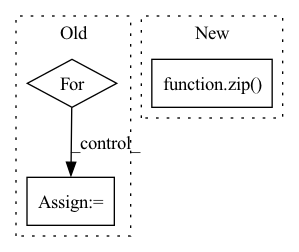

Pattern ID :1178

Before Change
n += n_in_base*mix_base
l = []
for m in layers:
l += [
nn.Conv1d(n, m, context, padding=context//2),
nn.GroupNorm(1, m),
nn.ELU(),
After Change
def __init__(self, n_in, num_filters_2d=(), filter_size_2d=(), dropout_rate=0.0):
super(CNNUnpairedLayer, self).__init__()
conv = []
for n_out, f_sz in zip(num_filters_2d, filter_size_2d):
conv += [
nn.Conv1d(n_in, n_out, f_sz, padding=f_sz//2),
nn.GroupNorm(1, n_out),
In pattern: SUPERPATTERN
Frequency: 4
Non-data size: 3
Instances
Fragment ID: 3455492
Project Name: mxfold/mxfold2
Commit Name: 97079ed64ffd5374169c120e85cd38ec4ed21553
Time: 2019-11-30
Author: satoken@bio.keio.ac.jp
File Name: dnnfold/fold/layers.py
M Class Name: CNNUnpairedLayer
N Class Name: CNNUnpairedLayer
M Method Name: __init__(5)
N Method Name: __init__(8)
M Parent Class: nn.Module
N Parent Class: nn.Module
M File Name: dnnfold/fold/layers.py
N File Name: dnnfold/fold/layers.py
M Start Line: 349
M End Line: 368
N Start Line: 123
N End Line: 132
Fragment ID: 3455488
Project Name: keio-bioinformatics/mxfold2
Commit Name: 97079ed64ffd5374169c120e85cd38ec4ed21553
Time: 2019-11-30
Author: satoken@bio.keio.ac.jp
File Name: dnnfold/fold/layers.py
M Class Name: CNNUnpairedLayer
N Class Name: CNNUnpairedLayer
M Method Name: __init__(5)
N Method Name: __init__(8)
M Parent Class: nn.Module
N Parent Class: nn.Module
M File Name: dnnfold/fold/layers.py
N File Name: dnnfold/fold/layers.py
M Start Line: 349
M End Line: 368
N Start Line: 123
N End Line: 132
Fragment ID: 3455490
Project Name: alvinwan/nbdt-pytorch-image-models
Commit Name: 9f11b4e8a25495874d84a56d4ca11af191a01324
Time: 2020-02-01
Author: rwightman@gmail.com
File Name: timm/models/conv2d_layers.py
M Class Name: SelectiveKernelConv
N Class Name: SelectiveKernelConv
M Method Name: __init__(14)
N Method Name: __init__(13)
M Parent Class: nn.Module
N Parent Class: nn.Module
M File Name: timm/models/conv2d_layers.py
N File Name: timm/models/conv2d_layers.py
M Start Line: 280
M End Line: 311
N Start Line: 303
N End Line: 333